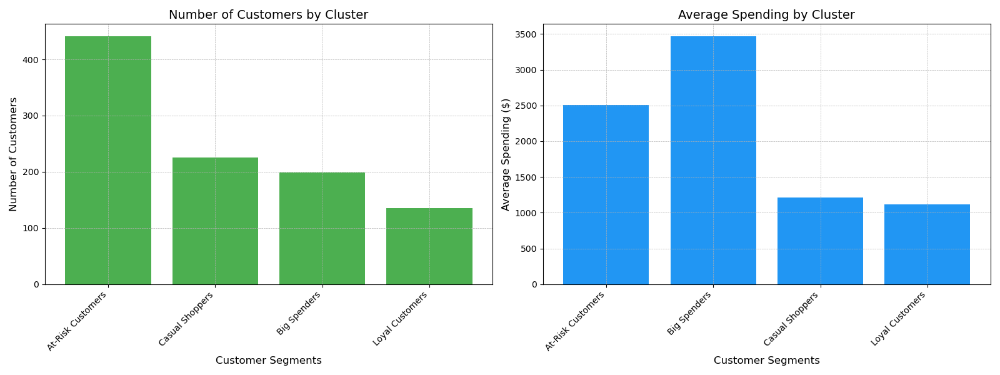
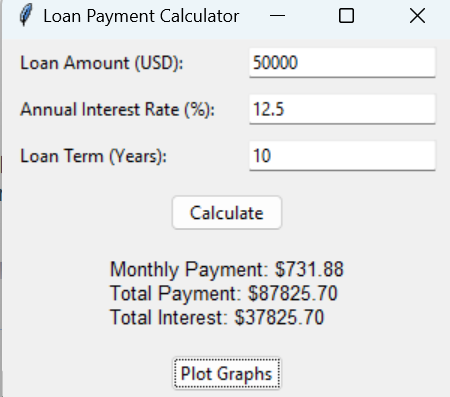

LiamBot – AI Assistant
Meet LiamBot: a nerdy, witty chatbot who says "Erm..." when he's thinking hard. Powered by OpenAI's GPT-4o, he answers questions, drops facts, and occasionally morphs into LiamBron when basketball comes up.
Advanced Analytics for Mario Kart
A real-time analytics dashboard for Mario Kart gameplay, built with Firebase for data storage and synchronization. This web app tracks race results and player performance metrics, providing a fun way for me and my friends to view and compare our stats.
View Analytics DashboardRadiation Data Analysis
View ReportAt C-10 Research & Education Foundation, I analyzed over 10,000 radiation reports across 15 datasets using Excel. With pivot tables, conditional formatting, and charts, I uncovered a 314% variance that led to a 30% faster reporting process, reviewed by the NH Department of Health.
Customer Segmentation Analysis
I used Python and the RFM model to group customers by behavior, then applied K-Means clustering to generate strategic insights. Visualized the segments for stakeholders.
Download Cluster Summary Download Text ReportLoan Payment Calculator
Built an interactive loan repayment calculator using Matplotlib, Seaborn, and Pandas to visualize payoff timelines.
 View Code
View Code